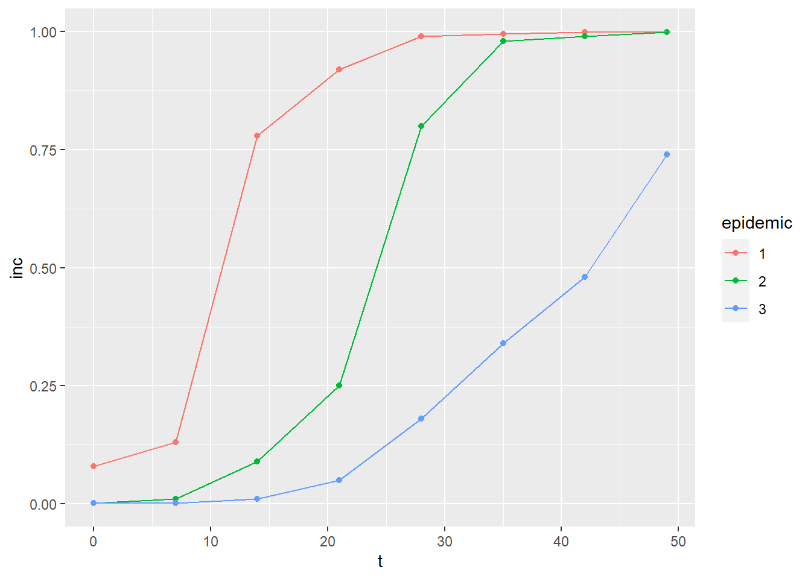
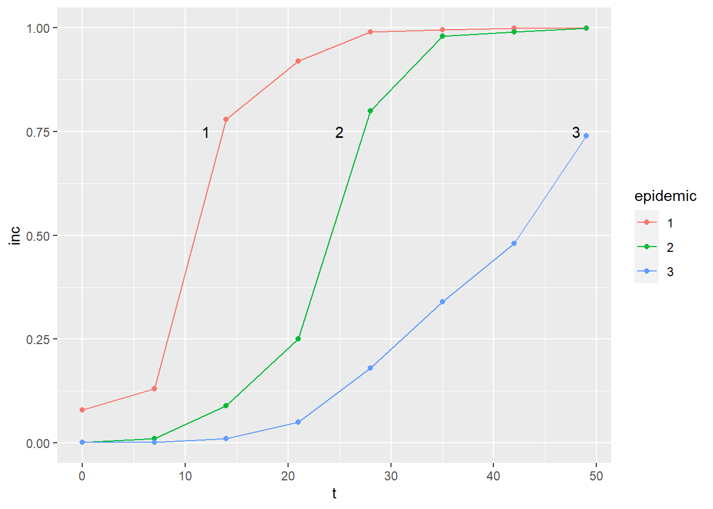
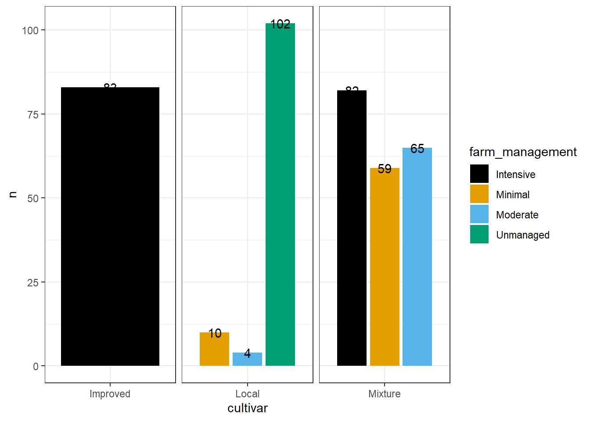

library(tidyverse)
library(datapasta)
library(janitor)
library(tidyverse)
library(ggthemes)Uso do datapasta e Tabela de contingência
Durante a aula 4 , serão apresentados diversas operações com dados datapasta, para copiar e colar dados como vetores, data frames e tribbles. Também serão feitas tabelas de contingência e gráficos de barras para análise de dados categóricos, utilizando as funções count e tabyl do pacote janitor.
Inicialmente, serão instalados (datapasta e janitor) e carregados os pacotes que serão necessários durante esta aula.
- “Packages” -> “Install” -> Na linha “Packages”, digite o nome do pacote de interesse-> Em seguida, clique em “Install”
Pacotes carregados
Pacote datapasta
O pacote datapasta amplia as capacidades do RStudio ao oferecer funcionalidades extras para a cópia e colagem de dados de diferentes origens. Isso permite a importação de dados de tabelas que possuam uma ou várias colunas.
Paste as vector
Para colar valores como um vetor, seleciona-se “Paste as vector”
#usado para apenas uma coluna
vet <-c("comp", "9", "12.5", "10", "8", "13.2", "11", "10.8", "9.5", "10.8", "10.4", "13.72", "15.91", "15.7", "14.2", "15.9", "16.54", "18", "14.4", "16.41", "16")Paste as tribble
Uma opção para criar um novo data frame é colar utilizando a opção “Paste as tribble”:
#usado para mais de uma coluna
dat2 <- tibble::tribble(
~trat, ~rep, ~comp,
"Mg2", 1L, 9,
"Mg2", 2L, 12.5,
"Mg2", 3L, 10,
"Mg2", 4L, 8,
"Mg2", 5L, 13.2,
"Mg2", 6L, 11,
"Mg2", 7L, 10.8,
"Mg2", 8L, 9.5,
"Mg2", 9L, 10.8,
"Mg2", 10L, 10.4,
"control", 1L, 13.72,
"control", 2L, 15.91,
"control", 3L, 15.7,
"control", 4L, 14.2,
"control", 5L, 15.9,
"control", 6L, 16.54,
"control", 7L, 18,
"control", 8L, 14.4,
"control", 9L, 16.41,
"control", 10L, 16
)Utilizando dados sobre os países:
visitas <- tibble::tribble(
~V1, ~V2, ~V3,
1L, "Argentina", 1L,
2L, "Austria", 1L,
3L, "Bolivia", 1L,
4L, "Cape Verde", 1L,
5L, "China", 1L,
6L, "Egypt", 1L,
7L, "Finland", 1L,
8L, "India", 1L,
9L, "Italy", 1L,
10L, "Malaysia", 1L,
11L, "Pakistan", 1L,
12L, "Poland", 1L,
13L, "Singapore", 1L,
14L, "Timor-Leste", 1L,
15L, "Uruguay", 1L,
16L, "Chile", 2L,
17L, "Paraguay", 2L,
18L, "Peru", 2L,
19L, "Ecuador", 3L,
20L, "France", 3L,
21L, "Netherlands", 4L,
22L, "Germany", 5L,
23L, "Hungary", 5L,
24L, "United Kingdom", 5L,
25L, "Colombia", 8L,
26L, "(not set)", 12L,
27L, "Spain", 16L,
28L, "Angola", 19L,
29L, "United States", 23L,
30L, "Portugal", 33L,
31L, "Mozambique", 43L,
32L, "Brasil", 43L)- Utilizando a função “paste as tribble”, os dados presentes neste link (https://r4pde.net/temporal-fitting.html#entering-data - seção 10.4) serão importados:
#os dados a seguir estão no formato largo
pepper <-
tribble(
~t, ~`1`, ~`2`, ~`3`,
0, 0.08, 0.001, 0.001,
7, 0.13, 0.01, 0.001,
14, 0.78, 0.09, 0.01,
21, 0.92, 0.25, 0.05,
28, 0.99, 0.8, 0.18,
35, 0.995, 0.98, 0.34,
42, 0.999, 0.99, 0.48,
49, 0.999, 0.999, 0.74
) Visualizando os dados importados acima, é possível observar que eles estão no formato largo. Sendo preciso transformá-los para o formato longo.
Para isso, será utilizada a função
pivot_longer (tidyr). Indicamos quais colunas serão transformadas para o formato longo e atribuímos nomes às novas colunas:
#Transfromar para o formato longo
pepper |>
pivot_longer(2:4,
names_to = "epidemic",
values_to = "inc") |>
#Criar grafico no ggplot (grafico de pontos com linhas)
ggplot(aes(t, inc, color = epidemic)) +
geom_point() +
geom_line()
#para retirar a leganda
#theme(legend.position = "none")Criação de gráfico de pontos com linhas utilizando o pivot_longer:
pepper |>
pivot_longer(2:4,
names_to = "epidemic",
values_to = "inc") |>
#Criar grafico no ggplot (grafico de pontos com linhas)
ggplot(aes(t, inc, color = epidemic)) +
geom_point() +
geom_line() +
annotate(geom = "text",
x = 12,
y = 0.75,
label = "1") +
annotate(geom = "text",
x = 25,
y = 0.75,
label = "2") +
annotate(geom = "text",
x = 48,
y = 0.75,
label = "3")
Tabela de contingência
Serão construídas tabelas de contingências. Estas tabelas que permitem fazer contagens de elementos/ ocorrências de variáveis categóricas dentro de uma mesma coluna rapidamente.
Formato .csv.
cr <- read_csv ("https://raw.githubusercontent.com/emdelponte/paper-coffee-rust-Ethiopia/master/data/survey_clean.csv")
#restringir contagem para duas variaveis (region, zone), FORMATO LARGO
cr |>
count(region, zone)# A tibble: 9 × 3
region zone n
<chr> <chr> <int>
1 Oromia Bale 30
2 Oromia Ilu AbaBora 45
3 Oromia Jimma 45
4 Oromia West Wellega 45
5 SNNPR Bench Maji 45
6 SNNPR Gedio 45
7 SNNPR Keffa 45
8 SNNPR Sheka 45
9 SNNPR Sidama 60Utilizando a função tabyl
Dentro do pacote janitor há a função tabyl, com objetivo de gera uma tabela de frequências:
library(janitor)
# para descrever um conjunto, FORMATO LONGO
cr |>
tabyl(region, zone) region Bale Bench Maji Gedio Ilu AbaBora Jimma Keffa Sheka Sidama West Wellega
Oromia 30 0 0 45 45 0 0 0 45
SNNPR 0 45 45 0 0 45 45 60 0# se inverte zona por region fica no formato largo
cr |>
tabyl(zone, region) zone Oromia SNNPR
Bale 30 0
Bench Maji 0 45
Gedio 0 45
Ilu AbaBora 45 0
Jimma 45 0
Keffa 0 45
Sheka 0 45
Sidama 0 60
West Wellega 45 0cr |>
tabyl(cultivar, farm_management) cultivar Intensive Minimal Moderate Unmanaged
Improved 83 0 0 0
Local 0 10 4 102
Mixture 82 59 65 0Visualizando
count é utilizada para contar o número de ocorrências de valores únicos em uma variável ou combinação de variáveis dentro de um conjunto de dados. Pertence ao pacote dplyr. Foi criado o gráficos de coluna. Faz o empilhamento das colunas. Padrão steck.
cr |>
count(farm_management, cultivar) |>
ggplot(aes(cultivar, n, fill = farm_management)) +
geom_col(position = "stack")
Gráfico de barras lado a lado. Alterando a posição (dodge):
#para desemplilhar e colocar uma barra ao lado da outra
cr |>
count(farm_management, cultivar) |>
ggplot(aes(cultivar, n, fill = farm_management, label = n)) +
geom_col(position = "dodge2") +
scale_fill_colorblind()+
theme_bw()+
theme(strip.text.x = element_blank())+
facet_wrap(~cultivar, scales = "free") +
geom_text(position = position_dodge (width = 0.9))+
facet_wrap(~cultivar, scales = "free_x" )
Importação de dados de planilha
Formato online